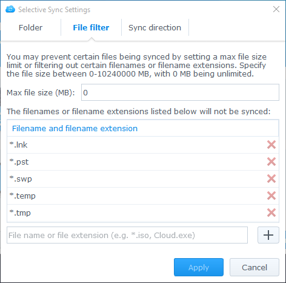
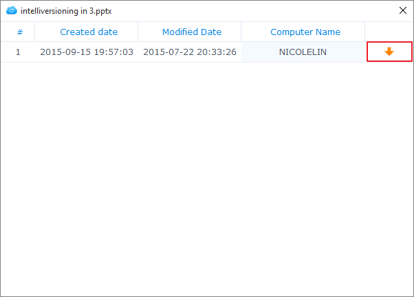

개요
Synology NAS용 Cloud Station은 Synology NAS에 있는 파일을 컴퓨터나 모바일 장치 같은 다른 장치와 쉽게 동기화(DS cloud를 통해)할 수 있도록 해주는 파일 동기화 응용 프로그램입니다. 컴퓨터에 저장된 파일을 Synology NAS에 자동으로 동기화하려면 Synology NAS에 Cloud Station Server를 설치하고, 컴퓨터에 Cloud Station Drive를 설치합니다.
Synology NAS 및 컴퓨터 간의 연결 설정
- 패키지 센터로 이동하여 Cloud Station Server를 찾은 다음 설치를 클릭합니다.
- Cloud Station Server를 실행합니다.
- 개요 탭에서 Cloud Station Drive 아래의 단추를 클릭하여 운영 체제에 사용할 Cloud Station Drive를 다운로드합니다. (Synology 다운로드 센터에서도 Cloud Station을 다운로드할 수 있습니다.)
- 컴퓨터에서 설치 관리자를 실행하고 화면에 나타나는 지침을 따릅니다.
- 설치를 마친 후 컴퓨터에서 Cloud Station을 실행합니다. 지금 시작을 클릭합니다.
- Cloud Station을 실행 중인 Synology NAS의 주소(또는 QuickConnect ID), 사용자 이름 및 패스워드를 입력합니다. 오른쪽에 있는 검색 아이콘을 클릭하면 LAN 내에서 IP를 검색할 수 있습니다. 다음을 클릭합니다.
- 편집 아이콘을 클릭하여 Synology NAS와 컴퓨터에서 동기화할 폴더를 선택합니다. 그런 다음 고급을 클릭하여 동기화 설정을 구성할 수 있습니다.
- 동기화를 원하지 않는 폴더는 선택 해제합니다.
- 동기화에서 제외할 파일 형식 또는 최대 파일 크기나 불량 목록 파일 이름을 설정합니다. 
- 양방향으로 동기화할지 또는 Synology NAS에서 데이터를 다운로드하기만 할지를 선택합니다.
- 완료를 클릭하여 설정을 완료합니다.
- 시스템 트레이에서 Cloud Station 아이콘을 찾을 수 있습니다.
- 시스템 트레이 아이콘을 클릭하여 트레이 메뉴를 엽니다. 여기서 진행률 및 파일 상태를 확인할 수 있습니다. 여기서 진행률 및 파일 상태를 확인할 수 있습니다. 주 앱을 클릭하여 Cloud Station을 실행합니다.
- 실행하면 Cloud Station을 사용하는 방법에 대한 몇 가지 정보가 보입니다. 정보를 더 보려면 오른쪽 화살표를 클릭하고 자세한 정보를 보려면 온라인 자습서를 클릭합니다. 정보가 필요 없는 경우 이것을 다시 표시 안 함 옆의 상자를 선택합니다.
- 이제 Cloud Station Drive에서 동기화 작업을 관리할 수 있습니다.


동기화된 파일의 이전 버전 다운로드
- 시스템 트레이에서 Cloud Station Drive 아이콘을 클릭하고 폴더 아이콘을 클릭합니다.
- 선택된 파일을 마우스 오른쪽 단추로 클릭하고 Synology Cloud Station > 이전 버전 찾아보기를 선택합니다.
- 다운로드하려는 버전을 찾아 다운로드 아이콘을 클릭합니다. 


Cloud Station Server에서 동기화된 파일의 이전 버전 다운로드 또는 복원
- Cloud Station Server > 버전 기록으로 이동한 다음 복원할 파일 또는 폴더를 찾습니다.
- 검색할 파일을 클릭하고 작업 > 이전 버전 찾아보기를 클릭합니다.
- 다운로드할 파일의 버전을 선택하고 다운로드를 클릭합니다. 또는, 선택한 버전을 복원하려는 것이 확실한 경우, 복원을 클릭하면 현재 버전을 덮어씁니다.


중요한 참고 사항
- 실수로 파일이 제거되거나 덮어쓰는 경우에 대비하여 항상 과거 버전을 유지하십시오.
- 전역 설정에서는 컴퓨터에서 파일을 삭제할 때 해당 파일을 NAS에서 다시 가져올지 아니면 NAS에서 삭제할지 여부를 구성할 수 있습니다.
모바일 장치와 데이터 동기화
DS cloud는 Apple App Store 및 Google Play Store에서 무료로 제공합니다. 아래 QR 코드를 스캔하여 즉시 다운로드할 수도 있습니다.